ACD_CoherentNoise Calibration r0729383941_coherentNoise
Input:
Files:
Time Span (MET seconds): 729383944.6773 - 729389619.0856
Triggers used: 10209
Use History
- stored at Fri Jun 5 10:48:57 2026
Output:
Summary Plots
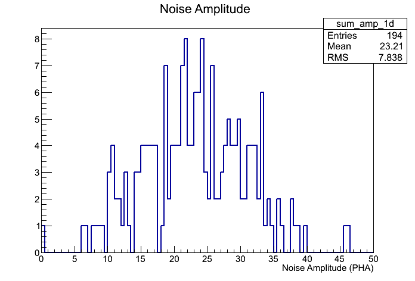
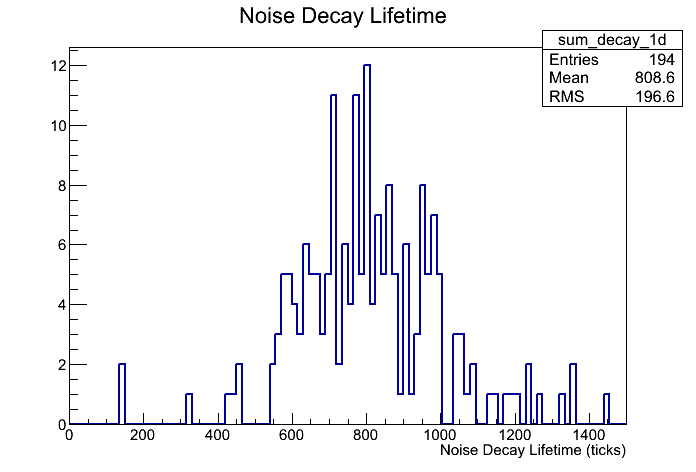
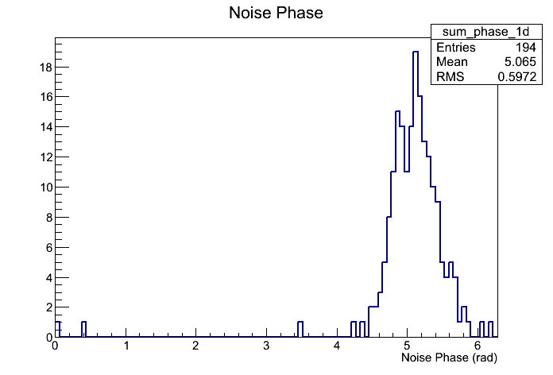
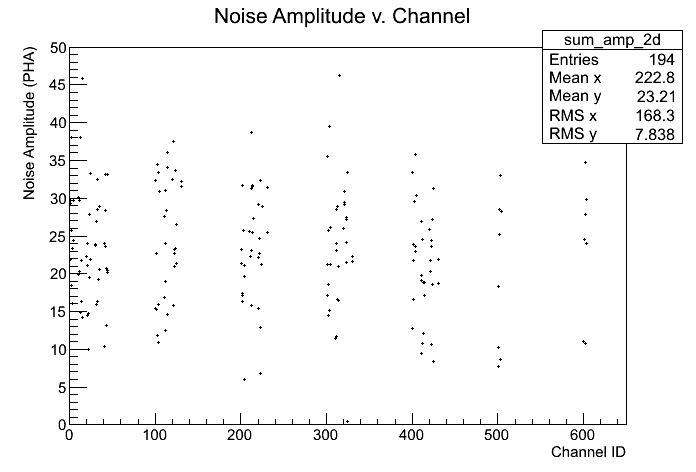
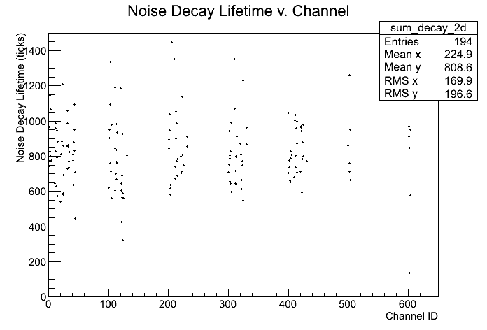
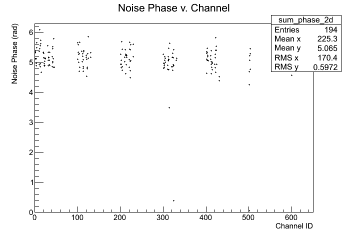
Plots with respect to reference calibration
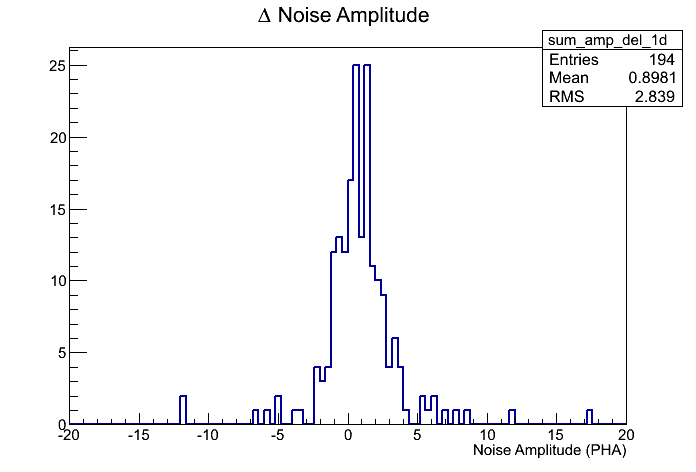
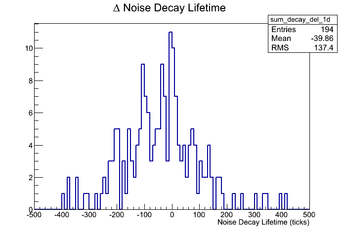
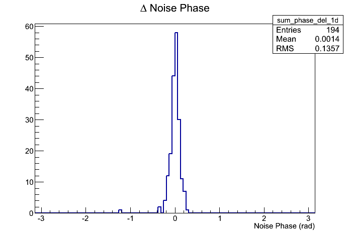
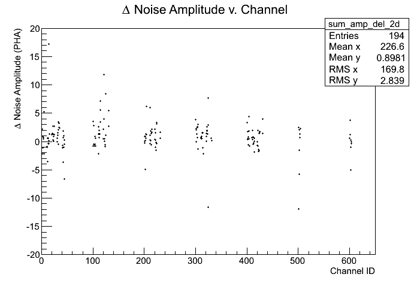
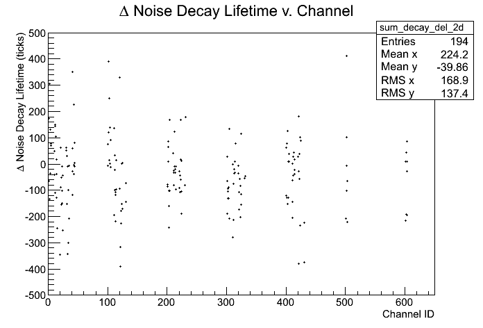
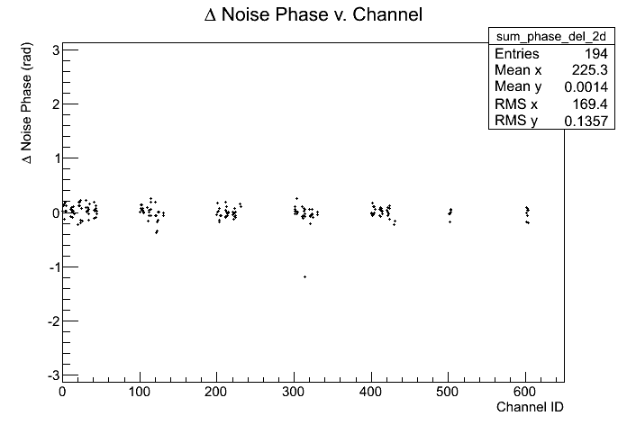
Reference Calibration
/sdf/group/fermi/ground/releases/monitor/ACD/FLIGHT/CoherentNoise/081208/r0250381744_coherentNoise.xml
Files:
Time Span (MET seconds): 250381746.9232 - 250386345.0845
Triggers used: 8214
Comments
- Report made at 2026-06-05 17:48:01 UTC by user abhishek
- Data from Mission week 818